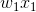
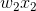
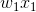
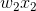
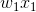
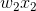
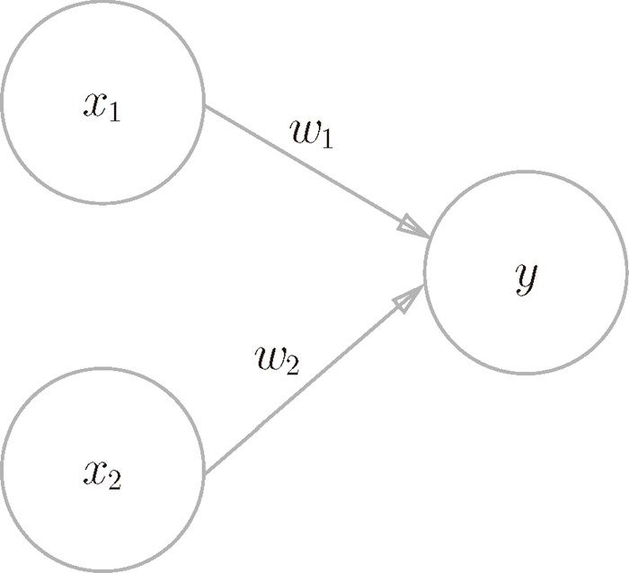
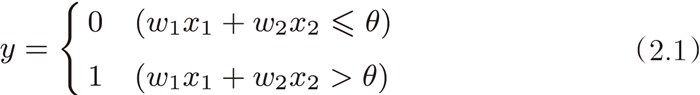

、
、 是输入信号，y 是输出信号，
是输入信号，y 是输出信号， 、
、 是权重（w 是 weight 的首字母）。图中的○称为“神经元”或者“节点”。输入信号被送往神经元时，会被分别乘以固定的权重（、）。神经元会计算传送过来的信号的总和，只有当这个总和超过了某个界限值时，才会输出 1。这也称为“神经元被激活”。这里将这个界限值称为阈值，用符号 θ 表示。
是权重（w 是 weight 的首字母）。图中的○称为“神经元”或者“节点”。输入信号被送往神经元时，会被分别乘以固定的权重（、）。神经元会计算传送过来的信号的总和，只有当这个总和超过了某个界限值时，才会输出 1。这也称为“神经元被激活”。这里将这个界限值称为阈值，用符号 θ 表示。感知机接收多个输入信号，输出一个信号。这里所说的“信号”可以想象成电流或河流那样具备“流动性”的东西。像电流流过导线，向前方输送电子一样，感知机的信号也会形成流，向前方输送信息。但是，和实际的电流不同的是，感知机的信号只有“流 / 不流”（1/0）两种取值。在本书中，0 对应“不传递信号”，1 对应“传递信号”。
图 2-1 是一个接收两个输入信号的感知机的例子。、 是输入信号，y 是输出信号，、 是权重（w 是 weight 的首字母）。图中的○称为“神经元”或者“节点”。输入信号被送往神经元时，会被分别乘以固定的权重（、）。神经元会计算传送过来的信号的总和，只有当这个总和超过了某个界限值时，才会输出 1。这也称为“神经元被激活”。这里将这个界限值称为阈值，用符号 θ 表示。

图 2-1 有两个输入的感知机
感知机的运行原理只有这些！把上述内容用数学式来表示，就是式（2.1）。

感知机的多个输入信号都有各自固有的权重，这些权重发挥着控制各个信号的重要性的作用。也就是说，权重越大，对应该权重的信号的重要性就越高。
权重相当于电流里所说的电阻。电阻是决定电流流动难度的参数，电阻越低，通过的电流就越大。而感知机的权重则是值越大，通过的信号就越大。不管是电阻还是权重，在控制信号流动难度（或者流动容易度）这一点上的作用都是一样的。